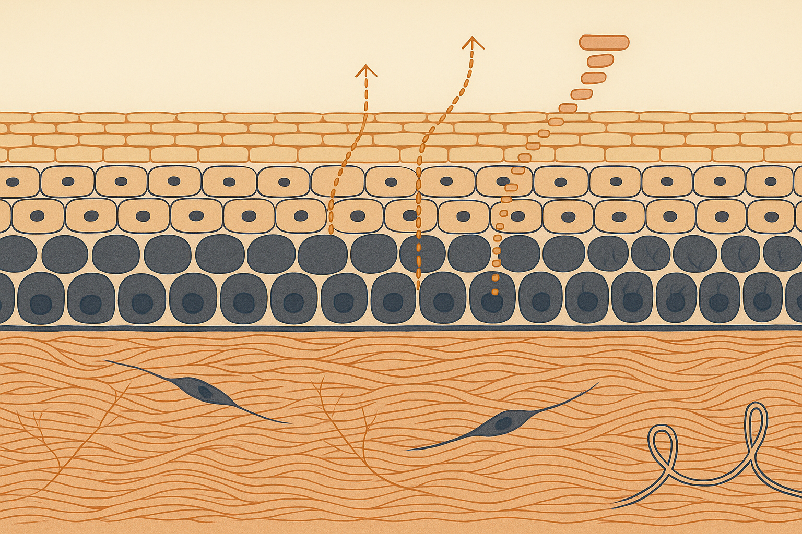
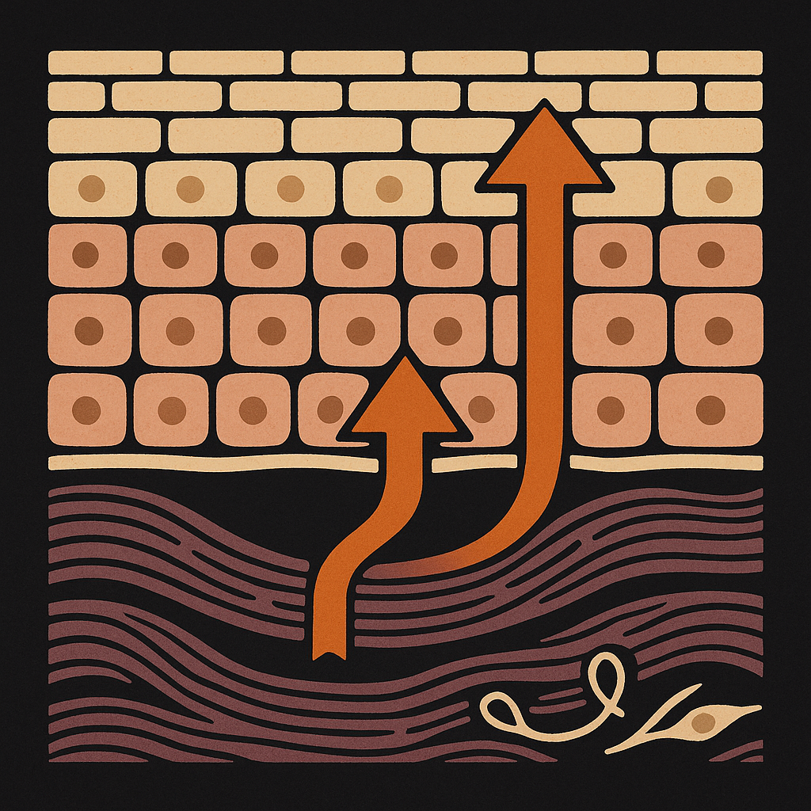
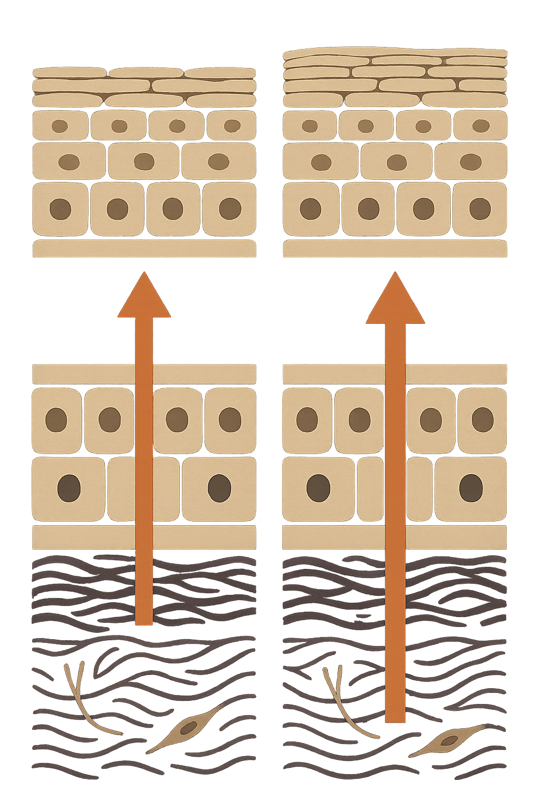

Review below. Reply approve to publish the Facebook post, or tell me edits.

Twenty-eight days is the number every skincare label is built on. It stopped being your number somewhere in your thirties.
That single mismatch explains a lot of quiet disappointment. You start something, you give it a month, nothing much has changed, you move on. The product may have been fine. The clock was wrong.
The term is keratinocyte turnover, and it describes a journey rather than an event.
New skin cells (keratinocytes) are made in the basal layer, the single row of dividing cells sitting at the bottom of the epidermis. From there each cell is pushed upward by the ones made after it. On the way it flattens, fills with keratin, loses its nucleus and eventually becomes a corneocyte: a flat, dead, protective brick at the surface, held in a lipid mortar. Those bricks are what you wash off in the shower. Your visible skin, the part you assess in the mirror, is essentially a tidy pile of cells that finished their working life days or weeks ago.
Think of it as a travelator at the airport, the moving walkway. The belt carries cells from the basal layer to the surface, and with age the belt slows down. You are still walking the same distance. The moving floor just does less of the work, so the same trip takes longer and more people bank up at the far end.
The commonly cited figures: roughly 28 days in your twenties, stretching to somewhere around 40 to 60 days by your fifties, with the thirties and forties sitting in between.
Treat those as directional, not personal. Turnover estimates vary widely depending on how they were measured (dye tracking, tape stripping, biopsy) and on where on the body the measurement was taken, because facial skin, forearm skin and the soles of your feet do not behave alike. Sun exposure history, hormonal changes and general skin health all shift it further.
So nobody can hand you your number. What is reliable is the direction. The belt slows. Which means the honest planning assumption after thirty is that anything you start today needs longer to show at the surface than the packaging implies.
Here is the part that reframes everything.
A change you make today cannot act on the cells already stacked at the top. Those are finished. It has to influence cells that have not been made yet, then wait while those cells make the journey up. That is two separate delays in series: the response, then the transit.
Run the arithmetic on a slower belt and you land where credible before-and-after windows for texture and fine lines actually sit: 8 to 12 weeks. Not four. A fortnight of anything, good or bad, tells you almost nothing except whether your skin tolerates it.
This is also why early "results" are so often something else. Two weeks in, you are usually seeing hydration, mild surface swelling, better light reflection off a smoother film of product. Real structural change is slower and quieter.
This is the payload. Four steps, and none of them cost anything.
Do that once and you will never again abandon something useful at week two, or keep paying for something useless for a year.
The useful correction first: scrubbing harder does not speed the belt.
Physical exfoliants and acids clear corneocytes that have already completed the journey. That can genuinely improve how skin looks and feels, and it can help products absorb. What it does not do is make the basal layer divide faster. Removing the arrivals hall queue does not make the travelator move. Different problem, different end of the journey.
The inputs that plausibly influence the pace are duller and slower: adequate sleep, sensible sun load (cumulative UV is the single biggest driver of the ageing you are trying to counter), avoiding chronic heat and friction, and keeping general inflammation down. All of those act over months, not fortnights. There is no lever that returns a fifty-year-old epidermis to a twenty-year-old schedule, and anything sold on that promise is selling the wrong physiology.
Exactly the same clock, and it is worth saying plainly rather than quietly exempting the category. At-home light therapy works, when it works, by nudging living cells that sit below the surface you can see. Those cells still have to be made, and they still have to make the trip up a belt that has slowed. So the honest window is the same two cycles: hydration and tone can shift early, anything textural is an 8 to 12 week question, and a device judged at day fourteen is being judged on the wrong evidence. No home device gets to skip the transit time. Nothing does.
Skin renews on a belt that slows with age. Every timeline you read was written for a faster belt than yours. Read it as two cycles, judge on a date you set in advance, and change one thing at a time.
Light therapy at home is a cosmetic device, not medicine. Consistency across a full cycle is why a small daily step is easier to sustain than an occasional intensive one, and if you want a closer look, it is here: Redermis Light Therapy Mask.

Twenty-eight days is the number every skincare label is built on. It stopped being your number somewhere in your thirties.
Skin makes new cells at the bottom of the epidermis and pushes them up to the surface. That trip is commonly estimated at around 28 days in your twenties, and 40 to 60 days by your fifties. Estimates vary by method and body site. The direction is the point.
So anything you start today has to be built into cells that do not exist yet, then carried up. Think of an airport travelator, the moving walkway, that has slowed down. Same distance, the belt just carries you less. That is the real reason honest timelines for texture and fine lines are 8 to 12 weeks, not two.
Three things you can do today:
1. Diarise a review date about 12 weeks out, then stop checking nightly.
2. Take one photo now. Same window, same time, no makeup.
3. Change one thing per cycle. If you begin a retinoid, a new serum and a light therapy device in the same fortnight, you will never know which one earned the result.
And the correction most of us need: scrubbing harder does not speed the belt up. It only clears what has already arrived.
Save this so you remember your twelve week date.
It is a cosmetic device, not medicine. If you ever want a closer look at a ten-minute daily light ritual, it is here: https://redermis.com.au/products/red-light-therapy-face-neck-mask
What did you give up on at week two that might have just needed more time?
**Hashtags:** #skincycle #skinscience #skinlongevity #skincareroutine

Twenty-eight days is the number every skincare label is built on. It stopped being your number somewhere in your thirties.
New cells are made at the basal layer, right at the bottom, then carried up to the surface. That trip lengthens with age, so a change you make today surfaces two cycles later, not one.
Turnover is commonly cited at roughly 28 days in your twenties and around 40 to 60 days by your fifties. Estimates vary by measurement method and body site. Renewal is a travelator that slows down: you still walk the same distance, the belt just carries you less.
Which is why honest timelines for texture and fine lines land at 8 to 12 weeks.
Set a review date, not a results date.
Photograph week zero, same window, same time.
Change one thing per cycle, so you can tell what actually worked.
Comment CYCLE and I will send you the 12-week photo checklist.
Redermis: a ten-minute daily light ritual for face and neck. Cosmetic device, not medicine. Link in bio if you want a closer look.
**Hashtags:** #skinlongevity #skinscience #ageingwell #redlighttherapy #australianskincare #skincaretips
**First comment:** One more correction worth having: exfoliating harder does not speed the belt up. Acids and scrubs clear cells that already finished the journey, which can genuinely help how skin looks and feels, but they do not make the basal layer divide any faster.
**Title:** The 28-day skin cycle is a twenties number
**Description:** Which is why real results take about twelve weeks after 30. Diarise a review date twelve weeks out instead of checking the mirror nightly. Change one variable per cycle so you can tell what worked. Renewal is a travelator that slows with age: turnover is commonly estimated at 40 to 60 days by your fifties (figures vary by method and site). Exfoliating harder does not speed the belt, it only clears what has already arrived. Light therapy at home is a cosmetic device, not medicine.
**CTA:** The full twelve-week protocol is in the article: https://redermis.com.au/blogs/journal
**Hashtags:** #skincaretips #redlighttherapy #ledfacemask #skinhealth #skincareroutine
**Image:** reuses the Instagram image (instagram.png). No separate Pinterest image is generated.